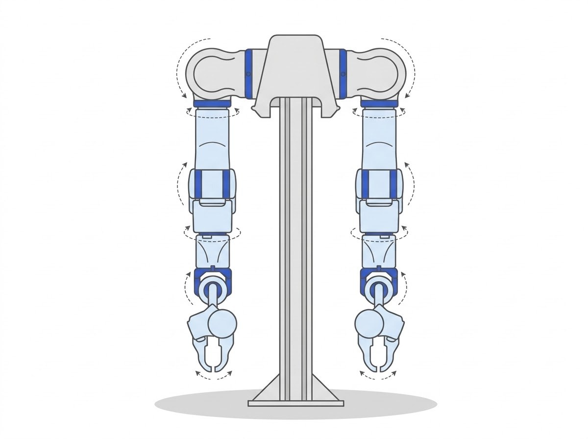
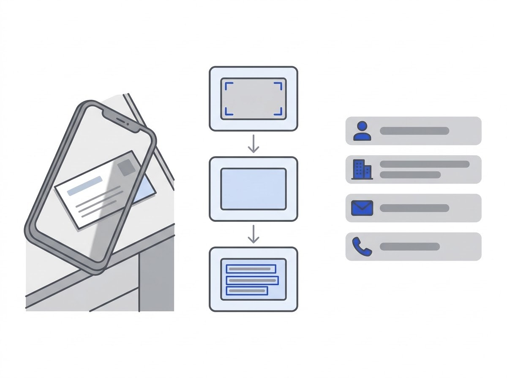
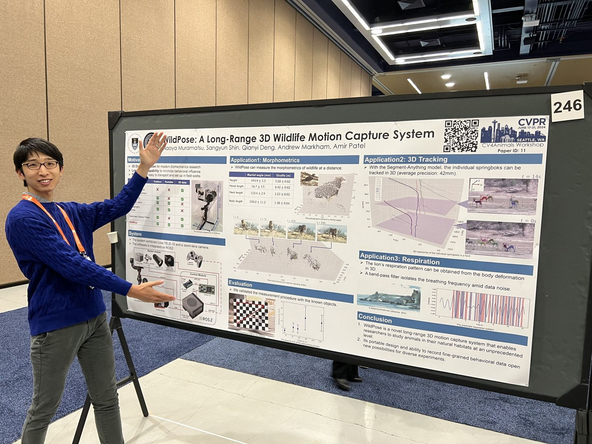
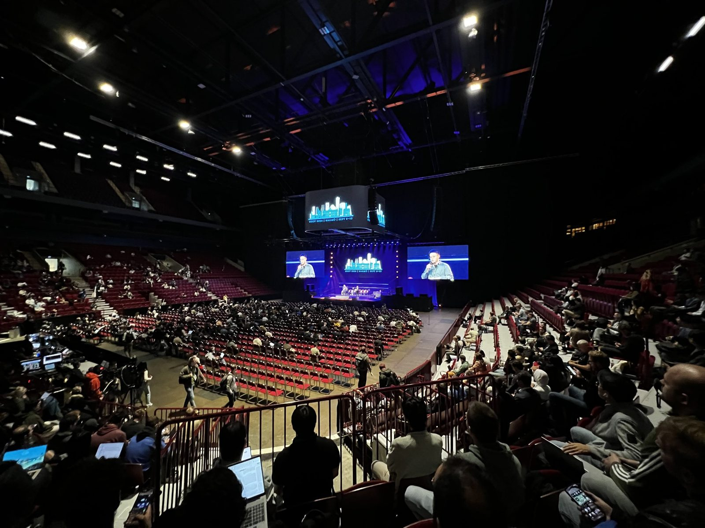
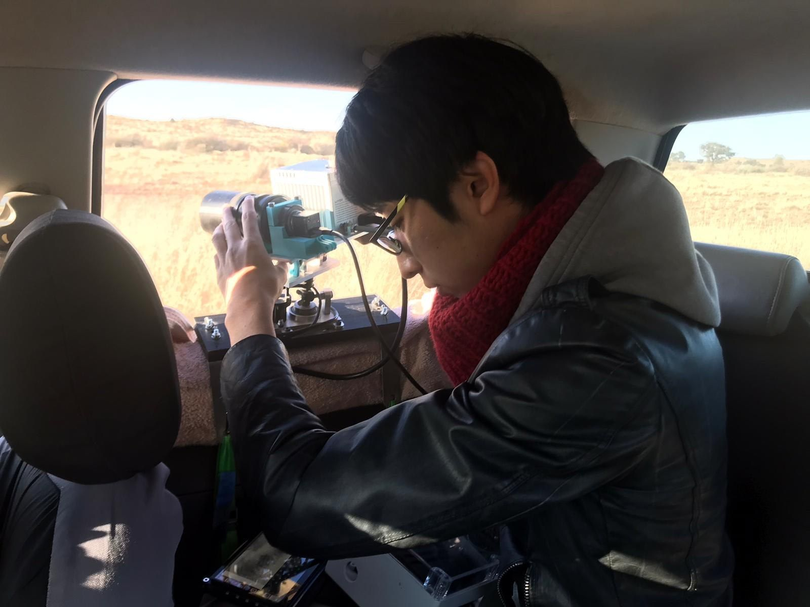
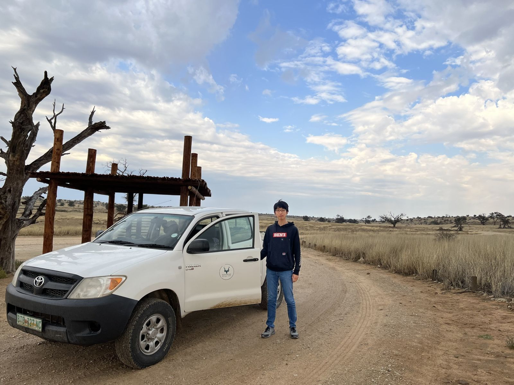
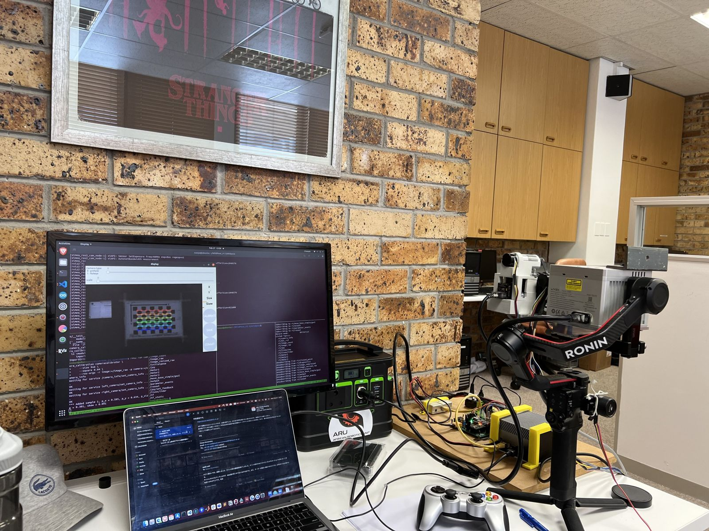
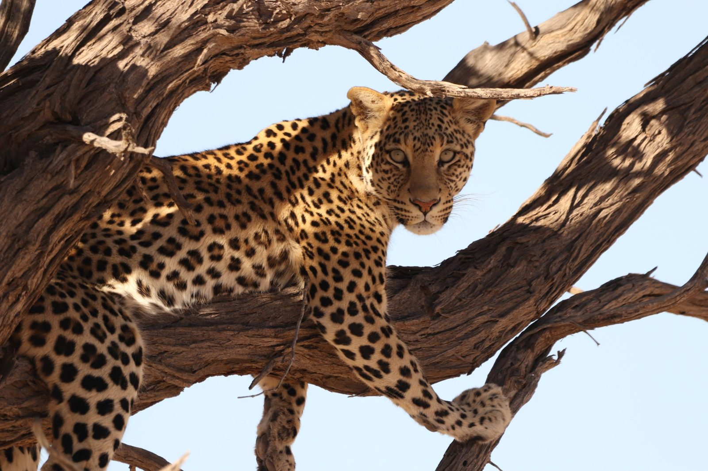
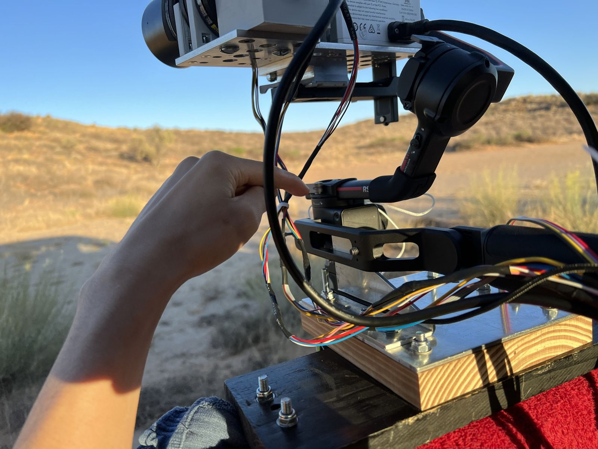

Dual-arm
OpenArm 2.0
立ち上げ・テレオペ・学習データ収集
- DOF
- 7 × 2 + gripper

Naoya Muramatsu, Ph.D.
立ち上げ・テレオペ・学習データ収集
段差昇降の強化学習
生成モデルによる動作生成の検証
マルチモーダル AI による自律化





LiDAR とズームカメラで、遠くの野生動物を 3D で測ります。
野生動物の RGB-LiDAR データセットを公開しました（共同筆頭）。
市販のカメラで、走るチーターの 3D 姿勢を推定します（共同筆頭）。
データセット・単眼 3D 復元・自律回転カメラを研究しました。
脚が壊れても歩き方を学び直す六脚ロボットです。














